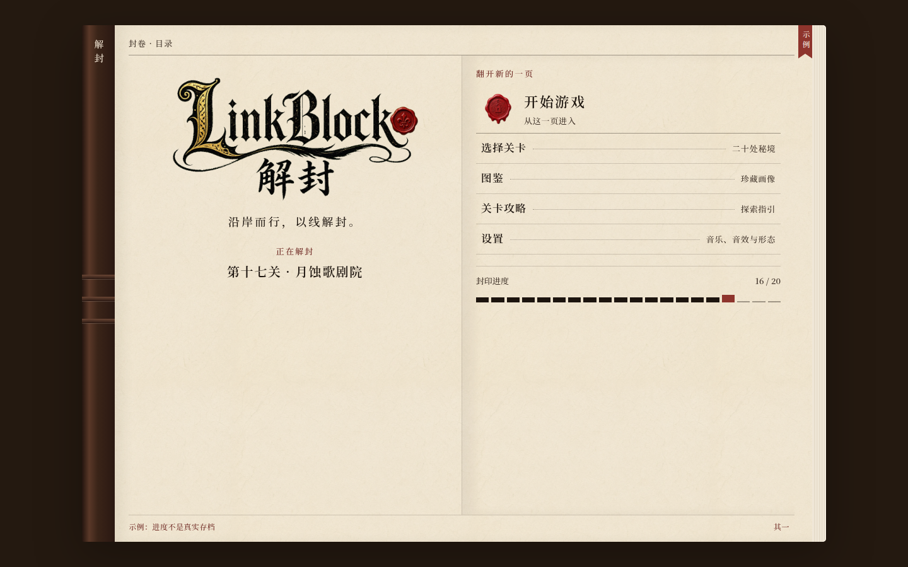
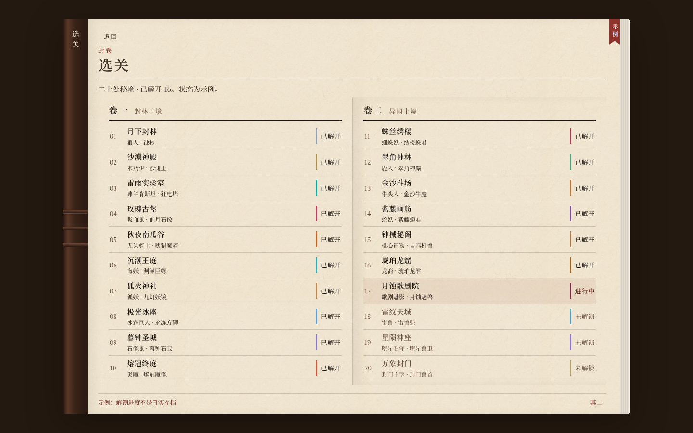
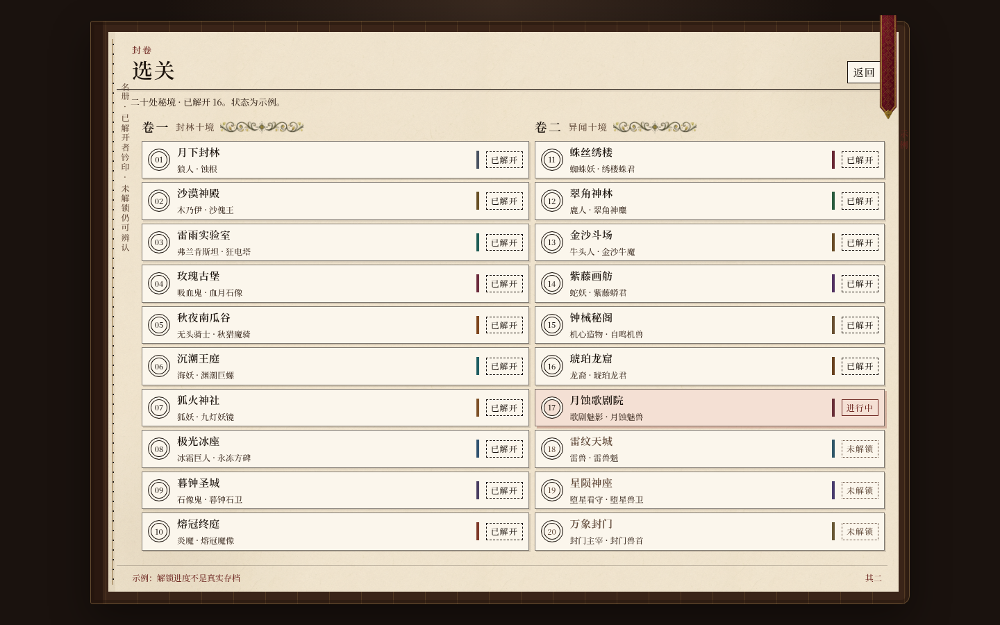
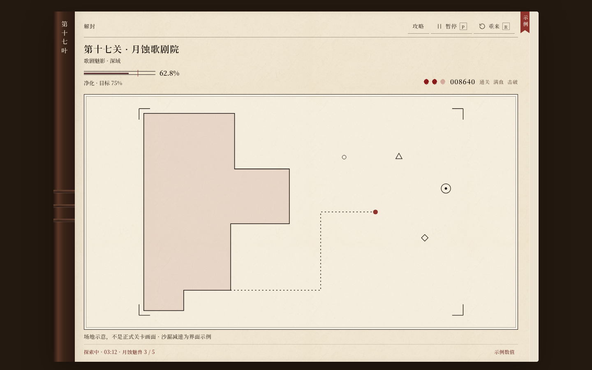
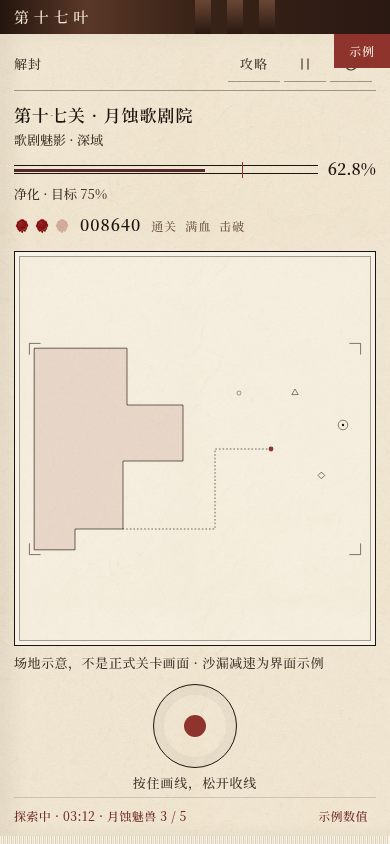
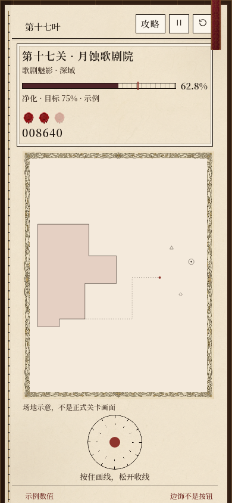
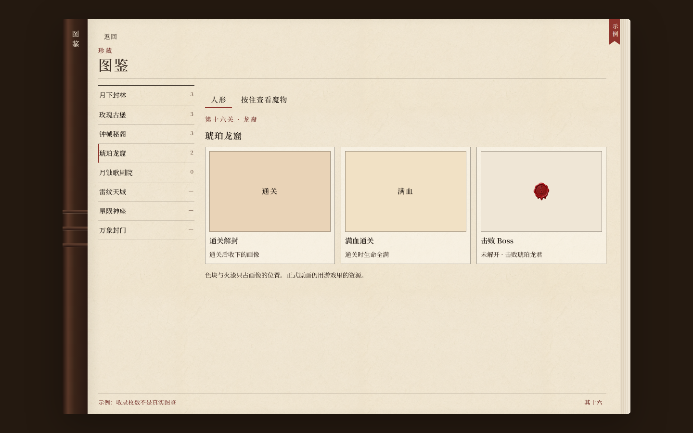
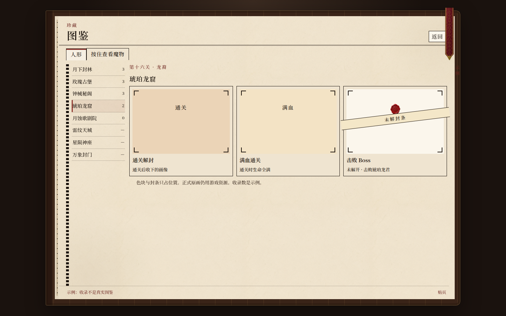
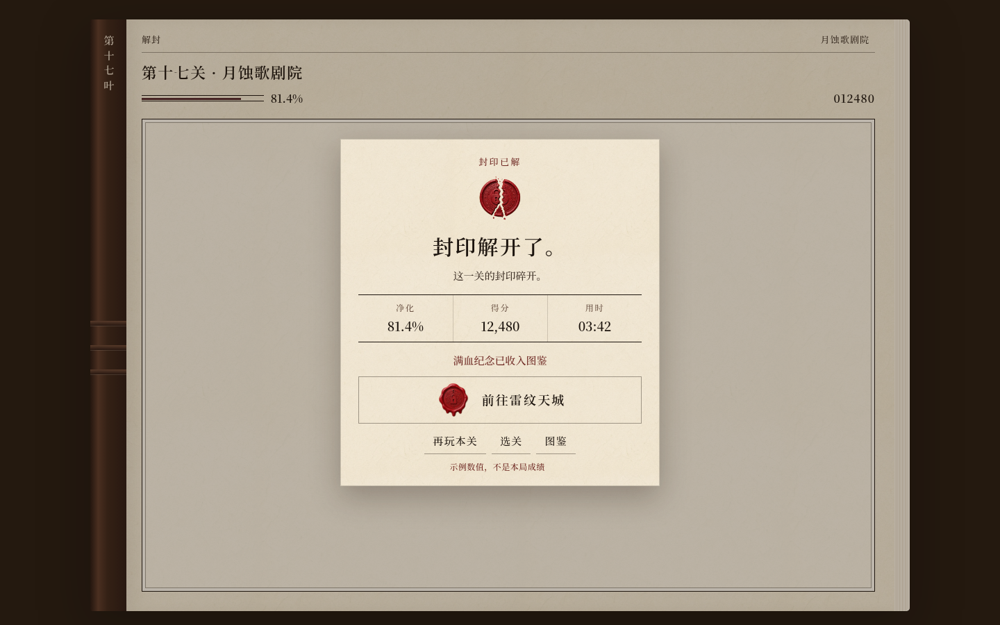
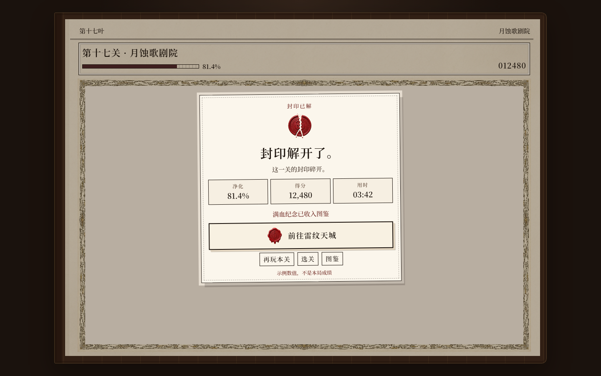

对照
从干净书页到密卷
左是上一稿的干净排版，右是这一稿。右图的进度和分数都是示例，局内图形是示意。线上游戏的原截图仍在 captures/current/。
主菜单


选关


局内 · 桌面


局内 · 手机


图鉴


胜利


对照
左是上一稿的干净排版，右是这一稿。右图的进度和分数都是示例，局内图形是示意。线上游戏的原截图仍在 captures/current/。









